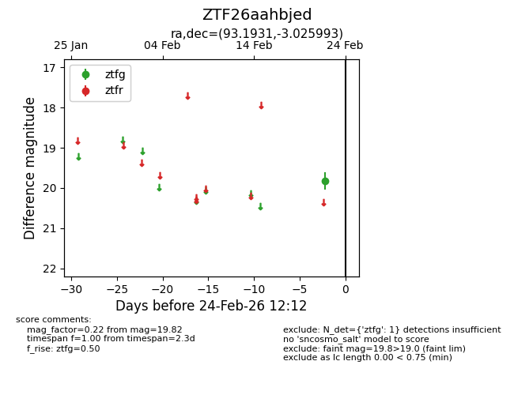
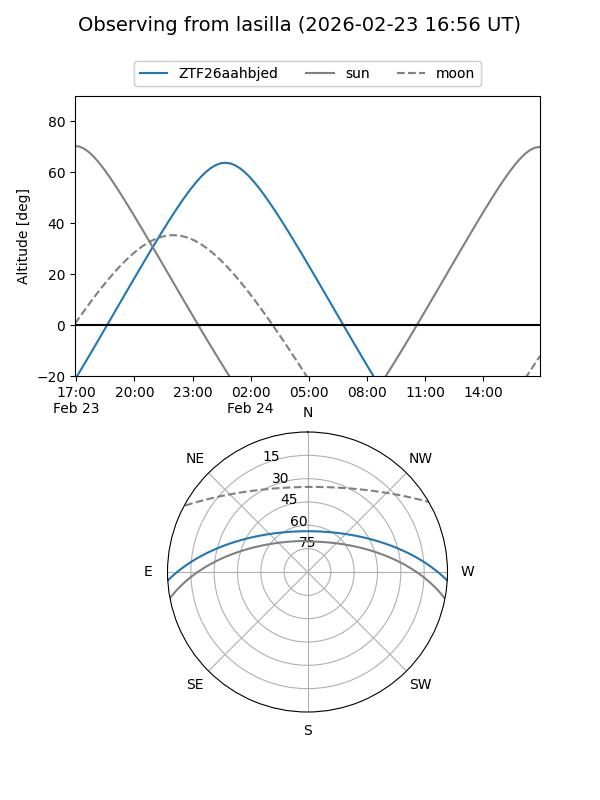
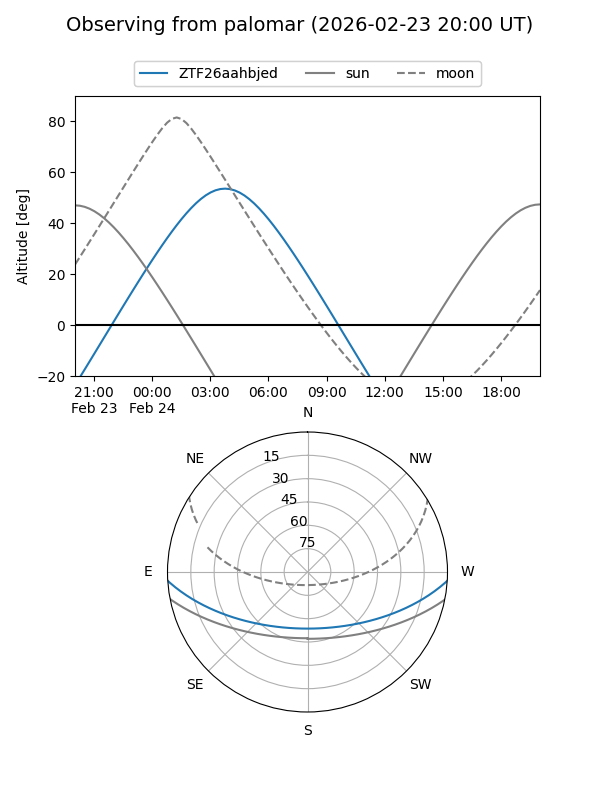

ZTF26aahbjed
Target ZTF26aahbjed at 2026-02-24 12:13
Aliases and brokers:
FINK: link
Lasair: link
ALeRCE: link
alt names
ZTF26aahbjed (ztf,fink_ztf)
Coordinates:
equatorial (ra, dec) = 93.1931,-3.02599
equatorial (HMS+DMS) = 06:12:46.33,-03:01:33.58
galactic (l, b) = (211.2168,-9.97986)
Flags:
Photometry:
last ztfg=19.82
1 ztfg detections
Lightcurve

Visibility


Additional plots